DeepFlow project (https://deep-flow.nl/, PLoS ONE Paper)
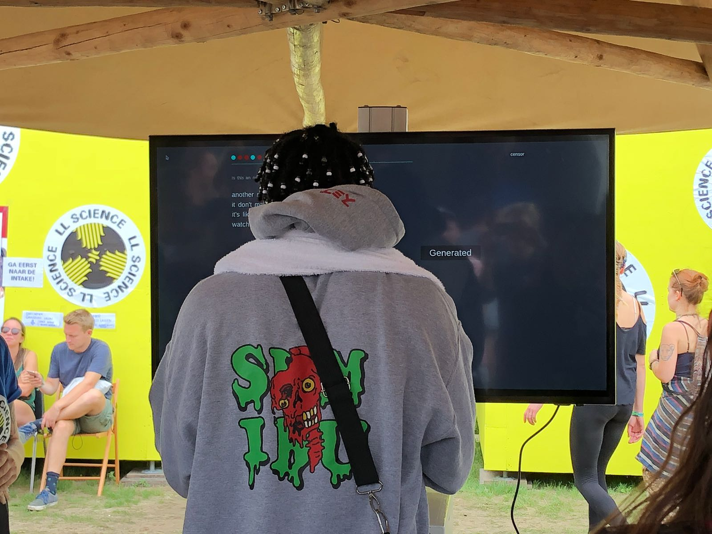
DeepFlow project (https://deep-flow.nl/, PLoS ONE Paper)
Current Presentation
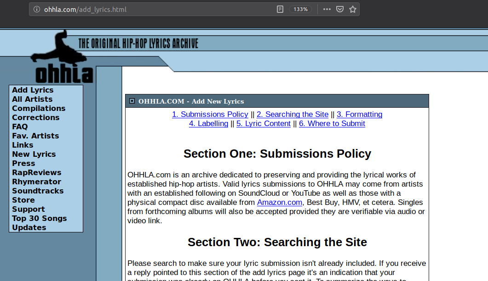
| Songs | Artists | Words | Vocabulary |
|---|---|---|---|
| 64,542 | 28,099 | 37,236,248 | 380,013 |
| \(\mu\) | \(\sigma\) | |
|---|---|---|
| Words/Song | 576.93 | 223.77 |
| Songs/Artist | 2.3 | 7.65 |
| Songs | Artists | Words | Vocabulary |
|---|---|---|---|
| 64,542 | 28,099 | 37,236,248 | 380,013 |
| Syllables | |||
| 43,531,133 | 89,337 |
\(P(The, cat, sat, on, the, mat, .)\) =
\(P(The | \text{<}start\text{>})\)
* \(P(cat | \text{<}start\text{>} , The)\)
* \(\ldots\)
* \(P(. | \text{<}start\text{>} , \ldots , mat)\)
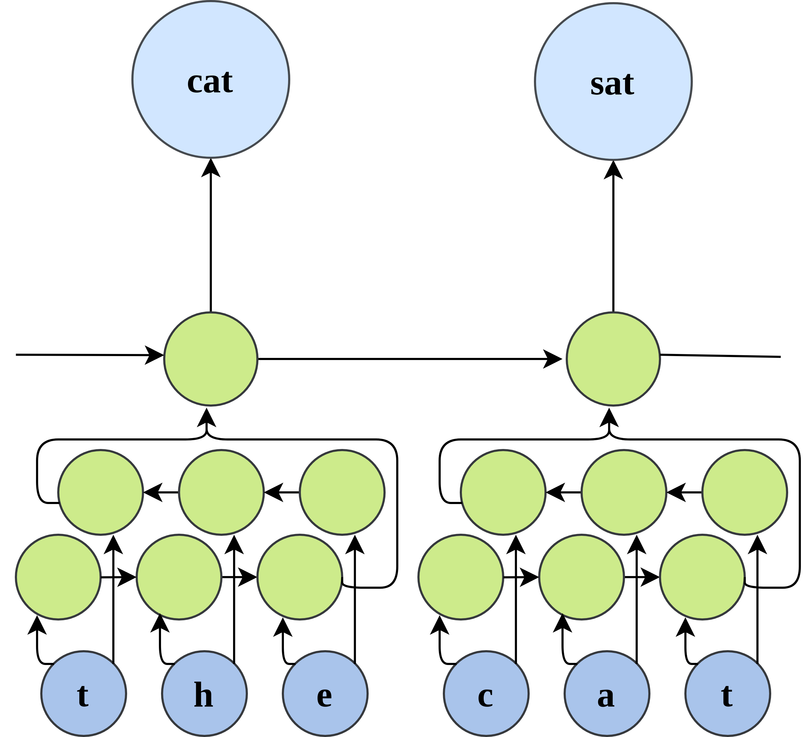
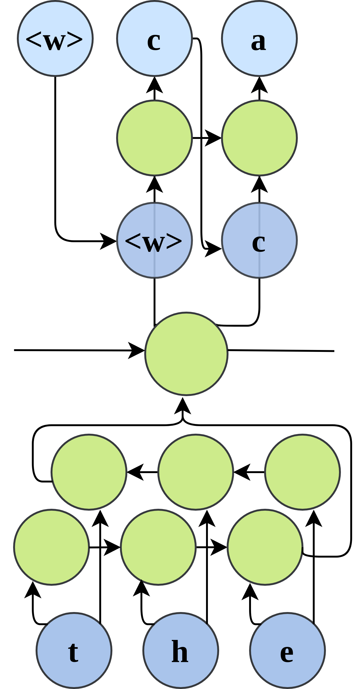
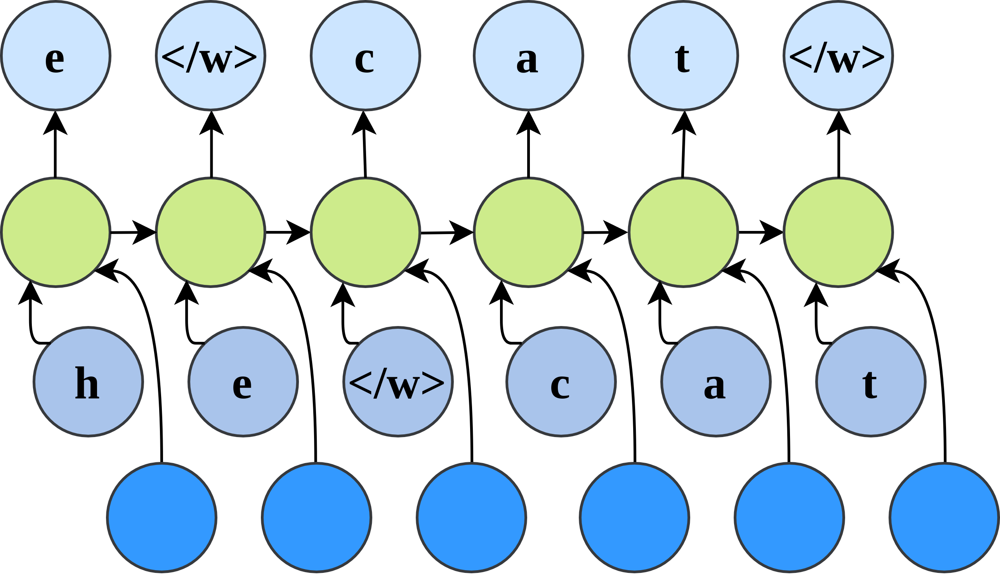
Condition on verse length in number of syllables
Condition on suffix starting at the last stressed syllable nucleus
Condition on suffix starting at the last stressed syllable nucleus
| I | like | it | like | that! | Hey | windows | down |
| AY1 | L-AY1-K | IH1-T | L-AY1-K | DH-AE1-T | H-EY1 | W-IH1-N-D-OW0-Z | D-AW1-N |
| I've | got | nothing | to | worry | about |
| AY1-V | G-AA1-T | N-AH1-TH-IH0-NG | T-OW1 | W-ER1-IY0 | AH0-B-AW1-T |
Formal conditions extracted from authentic text
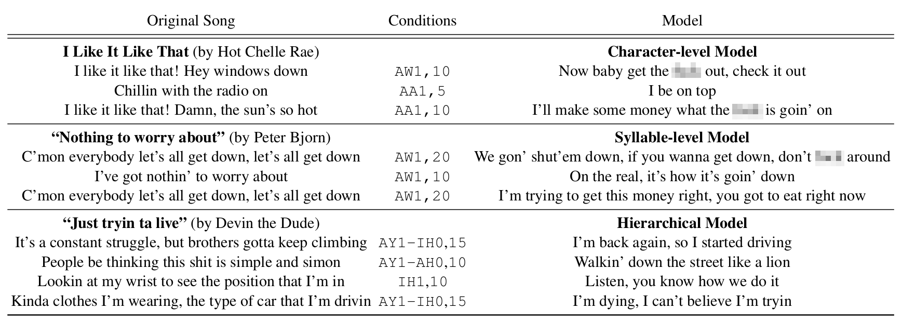
n (3-4) consecutive verses from training corpus| Scale | Conditional | Parameters | Result |
|---|---|---|---|
| Character | 12.6M | 1.65 (BPC) | |
| Character | Yes | 12.9M | 1.55 (BPC) |
| Syllable | 29.6M | 46.12 (PPL) | |
| Syllable | Yes | 29.9M | 33.43 (PPL) |
| HLM | 14.5M | 1.38 (BPC) | |
| HLM | Yes | 14.9M | 1.27 (BPC) |
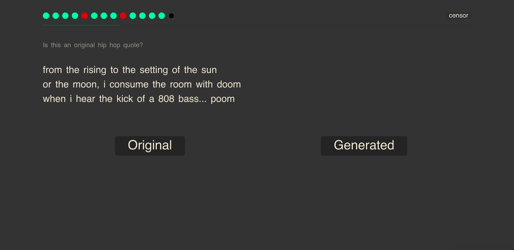
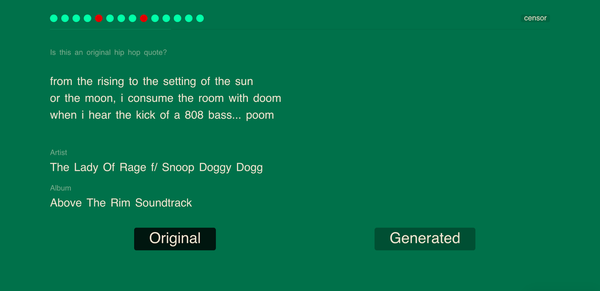
brms (R)Modeling scale
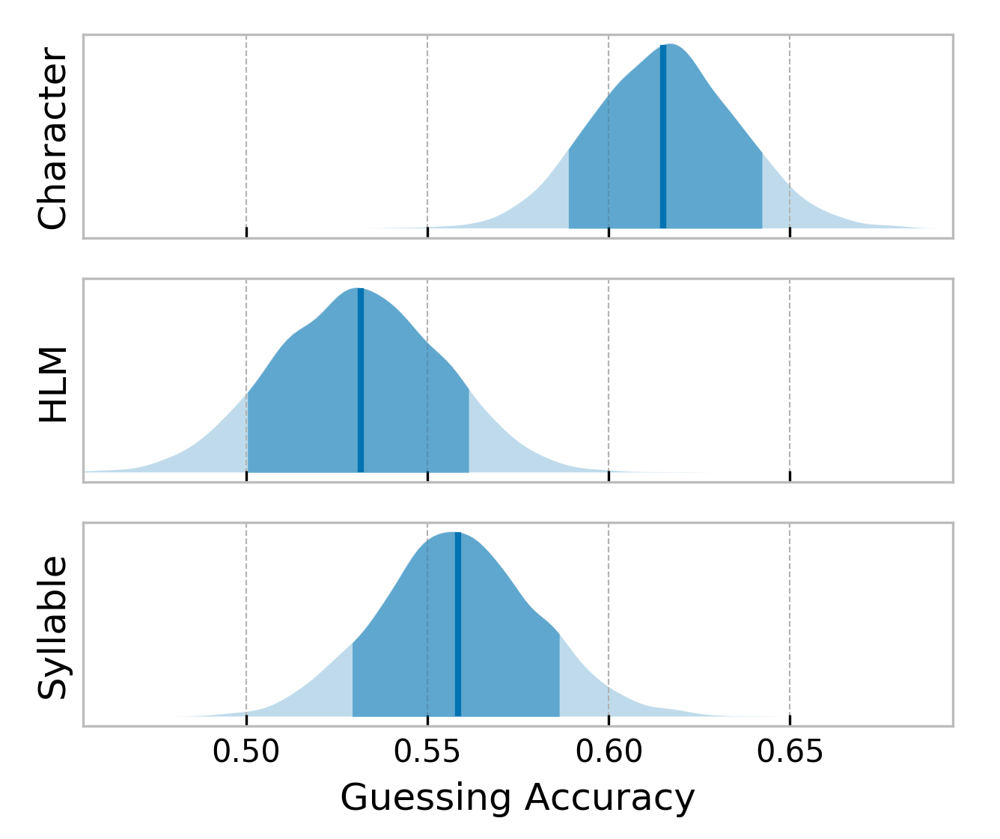
Modeling scale + Conditional Templates
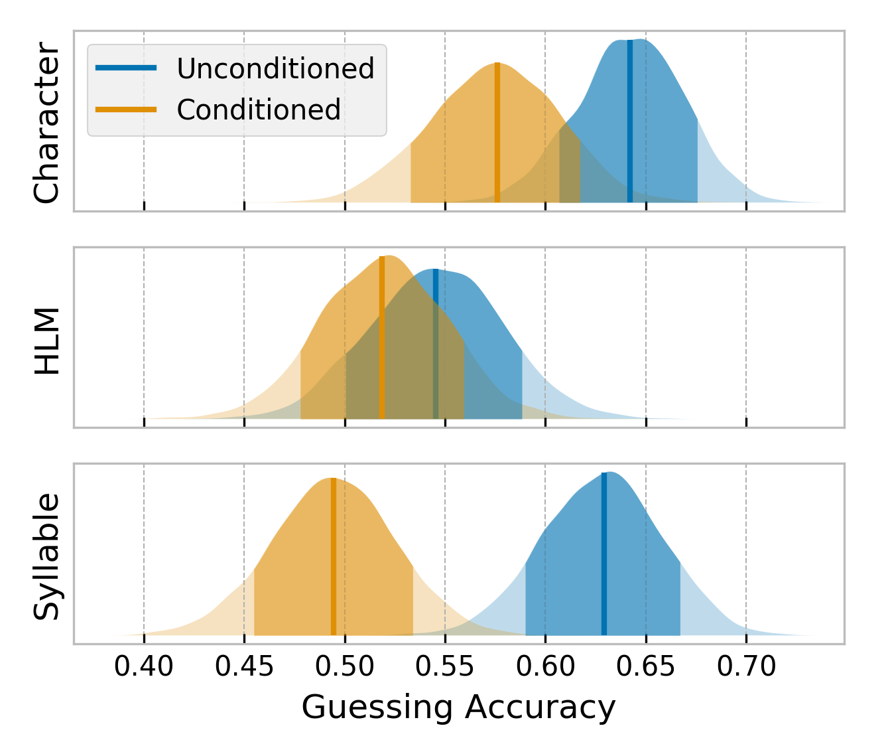
Quantify the ability of the models to succesfully generate the requested template
Acc)H): distribution of words per classVerse length Evaluation
Diff)| Character | Syllable | HLM | |
|---|---|---|---|
Acc |
28.37 | 61.75 | 36.29 |
H |
0.861 | 1.077 | 0.836 |
Diff |
0.09 | -1.59 | -2.59 |
H = 1.669)What linguistic properties characterize text generated at different scales?
Linguistic feature extraction
Feature Importance
Random Forest Classifier for feature importance (91% Out-of-Bag Accuracy)
Results 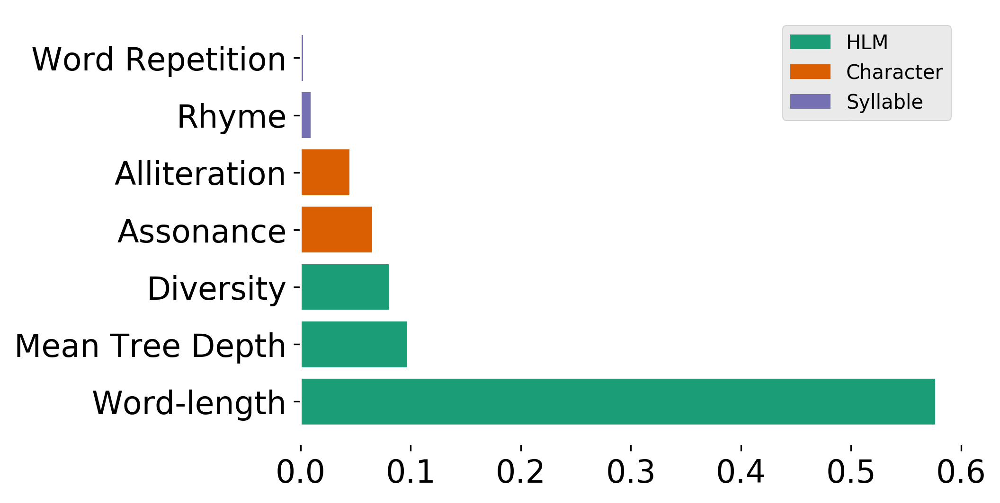